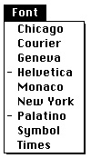

Legacy Document
Important: The information in this document is obsolete and should not be used for new development.
Important: The information in this document is obsolete and should not be used for new development.


Menus
A menu (as defined by the standard menu definition procedure) is a list of menu items arranged vertically and contained in a rectangle. The rectangle is shaded and can extend vertically for the length of the screen. If a menu has more items than will fit on the screen, the standard menu definition procedure adds a downward-pointing triangular indicator to the last item on the screen, and it automatically scrolls through the additional items when the user moves the cursor past the last menu item currently showing on the screen. When the user begins to scroll through the menu, the standard menu definition procedure adds an upward-pointing triangular indicator to the top item on the screen to indicate that the user can scroll the menu back to its original position.Each menu can have color information associated with it. If you do not define the colors for your menus in your application's menu color information table, the Menu Manager uses the default colors for your menus and menu bar. The default colors are black text on a white background. In most cases the default colors should meet the needs of your application. "The Menu Color Information Table Record" on page 3-98 and "The Menu Color Information Table Resource" on page 3-155 give information on how you can define colors for your application's menus.
Your application's menus can contain any number of menu items. "Menu Items"
(the next section) describes the visual variations that you can use when defining your menu items.You typically define the order and resource IDs of the menus in your application's menu bar in an
'MBAR'resource. You should define your'MBAR'resource such that the Apple menu is the first menu in the menu bar. You should define the next two menus as the File and Edit menus, followed by any other menus that your application uses. You do not need to define the Keyboard, Help, or Application menus in your'MBAR'resource; the Menu Manager automatically adds them to your application's menu bar if your application calls theGetNewMBarfunction and your menu bar includes an Apple menu or if your application inserts the Apple menu into the current menu list using theInsertMenuprocedure.You define the menu title and characteristics of each individual menu item in a
'MENU'resource. "Creating a Menu Resource" on page 3-45 describes the'MENU'resource in more detail.Pop-up menus do not appear in the menu bar but appear elsewhere on the screen. You often use pop-up menus in a dialog box when you want the user to be able to make a selection from a large list of choices. For example, rather than displaying the choices
as a number of radio buttons, you can use a pop-up menu to display the choices at the user's convenience.A hierarchical menu refers to either a pull-down or pop-up menu that has a submenu attached to it. (However, you should avoid attaching a submenu to a pop-up menu whenever possible, as this can make the interface more complex and less intuitive to
the user.)"Creating a Pop-Up Menu" on page 3-58 gives additional information about pop-up menus, and "Creating a Hierarchical Menu" on page 3-55 describes hierarchical menus in more detail.
Menu Items
A menu item can contain text or can be a line (a divider) separating groups of choices. A divider is always dimmed, and it has no other characteristics associated with it.Each menu item (other than dividers) can have a number of visual characteristics:
- An icon to the left of the menu item's text. If you define an icon for a menu item, use an icon that gives a symbolic representation of the menu item's meaning or effect. You can specify an icon, a small icon, a reduced icon, or a color icon as the icon for a menu item; however, items with small or reduced icons cannot have submenus and cannot be drawn in a script other than the current system script.
- A checkmark or other marking character to the left of the menu item's text (and to the left of the item's icon, if any). Use such a mark if you need to denote the status of the menu item or the mode it controls. A menu item can have a mark or a submenu, but not both.
- The symbol for the Command key (
Figure 3-5 shows two menus with menu items that illustrate many of the characteristics that you can use when defining your menu items.
- ) and another 1-byte character to the right of the menu item's text (referred to as the keyboard equivalent of a command). Use this if your application allows the user to invoke the menu command from the keyboard by pressing the Command key and one or more other keys in combination, just as if the user had chosen the command from the menu. An item that has a keyboard equivalent cannot have a submenu, a small icon, or a reduced icon and cannot be drawn in a script other than the current system script.
- A triangular indicator to the right of the menu item's text to indicate that the item has a submenu. A menu item that has a submenu cannot have a keyboard equivalent, a marking character, a small icon, or a reduced icon and cannot be drawn in a script other than the current system script.
- A font style--either plain or one of various other styles--for the menu item's text. You can set the menu item's style to bold, italic, underline, outline, shadow, or any combination of these.
- The text of the menu item. Choose words for menu items that declare the action that occurs when the user chooses the command (usually verbs, such as Print or Save). You can also use adjectives if the command changes the attribute of a selected object (for example, Bold or Italic). Unless you specify otherwise, the text of menu items appears in the script of the system font and system font size (for Roman scripts, the system font is Chicago and the system font size is 12 points). If you want a menu item's text to appear in a script other than the current system script, you can specify a script code for the text. The Menu Manager draws the item's text in the script identified by the script code if the script for the specified script system is installed. A menu item that is drawn in another script cannot have a submenu, small icon, or reduced icon.
- Three ellipsis points (...) as the last character in the text of the menu item. Use ellipses in the text of menu items to indicate that your application displays a dialog box that requests more information from the user before executing the command. Do not use
ellipses in menu items that display informational dialog boxes that do not require additional information from the user. In addition, you should not use ellipses if your application displays a confirmation alert after the user chooses a menu command. For example, if the user makes changes to a document, then chooses the Close command, your application can display a confirmation alert box, asking the user whether the document should be saved before closing. This type of command should not contain ellipses in its text.If your application displays a dialog box requesting more information in response to the choice of a menu command, do include ellipses in the menu item's text. For example, the Open command includes ellipses in its text because the user must provide additional information: the name of the file to open. When you request more information from the user in a dialog box, you should provide an OK button or its equivalent in the dialog box that the user can select to perform the command. The dialog box should also include a Cancel button or its equivalent so that the user can cancel the command. See the chapter "Dialog Manager" in this book for information on creating dialog boxes.
- A dimmed appearance. When your application disables a menu item, the Menu Manager dims the menu item to indicate that the user can't choose it. Note that the Menu Manager dims the entire menu item, including any mark or icon, the menu text, and any keyboard equivalent symbol. Divider lines always have a dimmed appearance, regardless of whether your application enables them or not. When your application disables an entire menu, the Menu Manager dims the menu title and all menu items in that menu.
Figure 3-5 Two menus with various characteristics
When the primary line direction is right to left (as is the case for non-Roman script systems such as Arabic) the Menu Manager reverses the order of elements in menu items. For example, any marking character appears to the far right and any keyboard equivalent appears to the far left of the menu item's text.
On a monitor that is set to display only black and white, the Menu Manager displays dividers as dotted lines. In all other cases, the Menu Manager displays dividers as appropriate, based on the current color table. For example, on a monitor set to display 4-bit color or greater, the Menu Manager typically displays dividers as gray lines.
Your menu can contain as many menu items as you wish. However, only the first
31 menu items can be individually disabled (all menu items past 31 are always enabled
if the menu is enabled and always disabled if the menu is disabled). If your menu items exceed the length of the screen, the user must scroll to view the additional items. Keep
in mind that the fewer the menu items in a menu, the simpler and clearer the menu is
for the user.Groups of Menu Items
The menu items in a particular menu should be logically related to the title of the menu and grouped to provide greater ease of use and understanding to the user. You should separate groups with dividers.A menu can contain both commands that perform actions and commands that set attributes. You should use a verb or verb phrase to name commands that perform actions (for example, Cut, Copy, Paste). You should use an adjective to name commands that set attributes of a selected object (for example, Bold, Italic, Underline). You should group menu items by their type: verbs (actions) or adjectives (attributes). Create groups within each type according to the guidelines described here.
Group action commands that are logically related but independent; this makes your menus easier to read. For example, the Cut, Copy, Paste, Clear, and Select All commands in the Edit menu are grouped together; the Create Publisher, Subscribe To, and Publisher Options commands are grouped together; and the Show Clipboard command is set
off by itself. (Figure 3-5 on page 3-13 shows these commands in the Edit menu of a typical application.)Group attribute commands that are interdependent. You typically group a set
of commands that set attributes into either a mutually exclusive group or an accumulating group.Group a set of attribute commands together if only one attribute in the group can be in effect at any one time (a mutually exclusive group). Place a checkmark next to the item that is currently in effect. If the user chooses a different attribute in the group, move the checkmark to the newly chosen attribute. For example, Figure 3-6 shows a Colors menu from the SurfWriter application. The colors listed in the Colors menu form a mutually exclusive group because only one color can be in effect at any one time. In this example, green is the color currently in effect. If the user chooses a different color, such as blue, the SurfWriter application uses the
SetItemMarkprocedure to remove the checkmark from the Green command and to place a checkmark next to the Blue command.Figure 3-6 Menu items in a mutually exclusive group
You can also group a set of attribute commands together if a number of the attributes in the group can be in effect at any one time (an accumulating group). In an accumulating group, use checkmarks to indicate that multiple attributes are in effect. In this type
of group, you also need to provide a command that cancels all the other attributes. For example, a Style menu that lets the user choose any combination of font styles should also include a Plain Text command that cancels all the other attributes. Figure 3-7 shows a Style menu; in this example, the Bold and Outline attributes are both in effect.Figure 3-7 Menu items in an accumulating group
You can also use a combination of checkmarks and dashes to help indicate the state of the user's content. For example, in a menu that reflects the state of a selection, place a checkmark next to an item if the attribute applies to the entire selection; place a dash next to an item if the attribute applies to only part of the selection. Figure 3-8 shows a Style menu that indicates that the selection contains more than one style. In this figure, the Bold attribute applies to the entire selection; the Underline attribute applies to only part of the selection.
Figure 3-8 Use of a checkmark and dash in an accumulating group
Your application should adjust its menus appropriately before displaying its menus.
For example, you should add checkmarks or dashes to items that are attributes as necessary, based on the state of the user's document and according to the type of window that is in the front. See "Adjusting the Menus of an Application" on page 3-75 for more information.Another way to show the presence or absence of an attribute is to use a toggled command. Use a toggled command if the attribute has two states and you want to allow the user to move between the two states using a single menu command. For example, your application could provide a Show Borders command when the borders surrounding publishers and subscribers are not showing in a document. When the user chooses the Show Borders command, your application should show the borders and change the menu item to Hide Borders. When the user chooses the Hide Borders command, your application should hide the borders surrounding any publishers or subscribers and change the menu item to Show Borders. Use a toggled command only when the wording of the two versions of the command is not confusing to the user. Choose a verb phrase as the text of a toggled command; the text should clearly indicate the action your application performs when the user chooses the item. See "Changing the Text of an Item" on page 3-61 for further information on providing a toggled command.
Keyboard Equivalents for Menu Commands
A menu command can have a keyboard equivalent. The term keyboard equivalent refers to a keyboard combination, such as Command-C (
-C) or any other combination of the Command key, another key, and one or more modifier keys, that invokes a corresponding menu command when pressed by the user. For example, if your application supports the New command in the File menu, your application should perform the same action when the user presses Command-N as when the user chooses New from the File menu.
The term Command-key equivalent refers specifically to a keyboard equivalent that the user invokes by holding down the Command key and pressing another key (other than a modifier key) at the same time. This generates a keyboard event that specifies a 1-byte character that your application should pass as a parameter to the
MenuKeyfunction. TheMenuKeyfunction maps the given 1-byte character to the menu item (if any) with that Command-key equivalent.The Menu Manager provides support for Command-key equivalents. If you define a Command-key equivalent for a menu item, the standard menu definition procedure draws the Command symbol and the specified 1-byte character to the right of the menu item's text (or to the left of the item's text if the primary line direction is right to left).
You detect a Command-key equivalent of a command by examining the
modifiersfield of the event record for a keyboard event. This allows you to determine whether
the Command key was pressed at the same time as the keyboard event. If so, your application typically calls theMenuKeyfunction, passing as a parameter the character code that represents the key pressed by the user. TheMenuKeyfunction determines if the 1-byte character matches any of the keyboard equivalents defined for your menu items; if so,MenuKeyreturns this information to your application. Your application can then perform the associated menu command, if any. See the chapter "Event Manager" in this book for additional information about themodifiersfield of the event record.The keyboard layout (
'KCHR') resource of some keyboards masks or cancels the effect of the Shift key when the Command key is also pressed. For example, with a U.S. keyboard layout, when a user presses Command-S, the character code in the message field of the event record is $73 (the character code for "s"); when a user presses Command-Shift-S, the character code in the message field of the event record is also $73. However, not all'KCHR'resources mask the Shift key in this way.Furthermore, when your application uses the
MenuKeyfunction to process Command- key equivalents,MenuKeydoes not distinguish between uppercase and lowercase letters. TheMenuKeyfunction takes the 1-byte character passed to it and calls theUpperTextprocedure (which provides localizable uppercase conversion of the character). Thus,MenuKeytranslates any lowercase character to uppercase when comparing a keyboard event to keyboard equivalents. If your application must distinguish between lowercase and uppercase characters for keyboard equivalents, you need to provide your own method for handling such keyboard equivalents.The key you specify for a Command-key equivalent must be a 1-byte character and is usually a letter (although you can specify 1-byte characters other than letters). For consistency and to provide greater support for localizing your application, you should always specify any letters for keyboard equivalents in uppercase when you define your application's menu commands.
If you wish to provide other types of keyboard equivalents in addition to Command-key equivalents, your application must take additional steps to support them. If your application allows the user to hold down more than one modifier key to invoke a keyboard equivalent, your application must provide in the menu item a visual indication that represents this keyboard combination. In most cases your application must use its own method (other than
MenuKey) for mapping the keyboard equivalent to the corresponding menu item.If you specify a key other than a letter for a Command-key equivalent or use more than one modifier key for a keyboard equivalent, you should choose keys and keyboard combinations that can be easily localized for other regions.
If your application uses other keyboard equivalents, you can examine the state of the modifier keys and use the
KeyTranslatefunction, if necessary, to help map the keyboard equivalent to a particular menu item. See the chapter "Event Manager" in this book for information on theKeyTranslatefunction, and see the discussion of'KCHR'resources in Inside Macintosh: Text for information on how various keyboard combinations map to specific character codes.One command that isn't listed in a menu but can be invoked from the keyboard is the Command-period (
-.) or Cancel command. You detect a Command-period command in a method similar to the method for detecting other keyboard equivalents--you examine the
modifiersfield of a keyboard event to determine whether the Command key was pressed. In this case, however, if the user pressed the period key in addition to the Command key, rather than invoking a menu command your application should cancel the current operation.You typically define the Command-key equivalents for your application's menu commands when you define the menu commands in a
'MENU'resource. The Menu Manager displays the Command-key equivalent for a menu command (if it has one)
to the right of the menu item's text (or to the left of the item's text for right-to-left
script systems).Apple reserves several keyboard equivalents for common commands. You should use these keyboard equivalents for commands in the File and Edit menus of your application.
Table 3-1 show the keyboard equivalents for standard commands.
Table 3-1 Table 3-1 Reserved keyboard equivalents for all systems
Keys Command Menu graphics/Command-key_Symbol_Prop.gif
-A
Select All Edit graphics/Command-key_Symbol_Prop.gif
-C
Copy Edit graphics/Command-key_Symbol_Prop.gif
-N
New File graphics/Command-key_Symbol_Prop.gif
-O
Open... File graphics/Command-key_Symbol_Prop.gif
-P
Print... File graphics/Command-key_Symbol_Prop.gif
-Q
Quit File graphics/Command-key_Symbol_Prop.gif
-S
Save File graphics/Command-key_Symbol_Prop.gif
-V
Paste Edit graphics/Command-key_Symbol_Prop.gif
-W
Close File graphics/Command-key_Symbol_Prop.gif
-X
Cut Edit graphics/Command-key_Symbol_Prop.gif
-Z
Undo Edit
Apple also reserves several keyboard equivalents for use with worldwide versions of system software, localized keyboards, and keyboard layouts. Table 3-2 shows these keyboard equivalents. Your application should not use the keyboard equivalents listed in Table 3-2 for its own menu commands.
- Note
- You should use the keyboard equivalents Z, X, C, and V for the editing commands Undo, Cut, Copy, and Paste in order to provide support for editing in desk accessories and dialog boxes.

See Inside Macintosh: Text for more discussion of handling keyboard equivalents in other script systems.
The key combinations listed in Table 3-1 and Table 3-2 are reserved across all applications. Even if your application doesn't support one of these menu commands, it shouldn't use these keyboard equivalents for another command. This guideline is for the user's benefit. Reserving these key combinations provides guaranteed, predictable behavior across all applications.
Table 3-2 Table 3-2 Reserved keyboard equivalents for worldwide systems
Keys Action graphics/Command-key_Symbol_Prop.gif
-Space bar
Rotate through enabled script systems graphics/Command-key_Symbol_Prop.gif
-Option-Space bar
Rotate through keyboard layouts or input methods within the active script system graphics/Command-key_Symbol_Prop.gif
-modifier key-Space bar
Reserved graphics/Command-key_Symbol_Prop.gif
-Right arrow
Change keyboard layout to the current keyboard layout of the Roman script graphics/Command-key_Symbol_Prop.gif
-Left arrow
Change keyboard layout to the current keyboard layout of the system script Table 3-3 shows other common keyboard equivalents. These keyboard equivalents are secondary to the standard keyboard equivalents listed in Table 3-1 and Table 3-2. If your application doesn't support one of the functions in Table 3-3, then you can use the equivalent as you wish.
Table 3-3 Table 3-3 Other common keyboard equivalents
Keys Command Menu graphics/Command-key_Symbol_Prop.gif
-B
Bold Style graphics/Command-key_Symbol_Prop.gif
-F
Find File graphics/Command-key_Symbol_Prop.gif
-G
Find Again File graphics/Command-key_Symbol_Prop.gif
-I
Italic Style graphics/Command-key_Symbol_Prop.gif
-T
Plain Text Style graphics/Command-key_Symbol_Prop.gif
-U
Underline Style You shouldn't assign keyboard equivalents to infrequently used menu commands. Only add keyboard equivalents for the commands that your users employ most frequently.
Menus Added Automatically by the Menu Manager
In System 7, the Menu Manager may add as many as three additional menus to your application's menu bar: the Help menu, the Keyboard menu, and the Application menu. These menus provide access to system features such as Balloon Help, keyboard layouts, and application switching. All three of these menus have icons as titles and are positioned at the right side of the menu bar. (These menus are sometimes referred to as the system-handled menus.)The Menu Manager automatically inserts these additional menus in your application's current menu list when your application inserts an Apple menu into its menu bar. In this case, the Menu Manager always displays the Application menu, displays the Help menu if space is available, and displays the Keyboard menu if multiple script systems are installed and space is available. The Menu Manager also displays the Keyboard menu if the
smfShowIconbit is set in the flags byte of the'itlc'resource.The Help menu icon or both the Help menu icon and the Keyboard menu icon disappear from the menu bar if your application inserts a menu whose title extends into the space occupied by one or both of those icons. This allows your application to reclaim any space in the menu bar that would have been occupied by one or both of those two menu icons, if necessary. However, if your application inserts a menu whose title is long enough to overlap space occupied by the Application menu icon, the overlapping portion of that title disappears behind the Application menu icon. The Application menu icon is always displayed in the menu bar.
Because the Menu Manager inserts the Help, Keyboard, and Application menus into your application's current menu bar, you should not make any assumptions about the last menu (or menus) in your menu bar. Apple also reserves the right to add other system-handled menus to your application's menu bar; for compatibility you should define your menu bar such that there is room for the Help, Keyboard, and Application menus and at least one additional system-handled menu.
Your application does not need to take any action if the user chooses an item from the Keyboard or Application menu; the Menu Manager performs any appropriate actions for these two menus. If the user chooses an item that your application added to the Help menu, your application should perform the corresponding action.
The following sections describe the Help, Keyboard, and Application menus in more detail, and they also describe other menus in a typical application, including the Apple, File, and Edit menus.
The Apple Menu
You should define the Apple menu as the first menu in your application. The title of the Apple menu is the Apple icon. The Apple menu of an application typically provides an About command as the first menu item, followed by a divider, which is followed by a list of all desktop objects contained in the Apple Menu Items folder. (The phrase desktop objects refers to applications, desk accessories, documents, folders, and any other item that can reside in the Apple Menu Items folder.) The items following the divider in the Apple menu are listed in alphabetical order. Each item below the divider lists a desktop object and the small icon for that object.Figure 3-9 shows the Apple menu for the SurfWriter application as it might appear on a particular user's system.
To create the items in your application's Apple menu, define the Apple menu title, the characteristics of your application's About command, and the divider following it in a
'MENU'resource.To insert the items contained in the Apple Menu Items folder into your application's Apple menu, use the
AppendResMenuorInsertResMenuprocedure and specify'DRVR'as the resource type to add in the parametertheType. If you do this, these procedures automatically add all items in the Apple Menu Items folder in alphabetical order to the specified menu.Figure 3-9 The Apple menu for the SurfWriter application
The user can place any desktop object in the Apple Menu Items folder. When the user places an item in this folder, the system software automatically adds it to the list of items in the Apple menu of all open applications.
- Note
- The Apple Menu Items folder is available in System 7 and later. In System 6, the
AppendResMenuandInsertResMenuprocedures add only the desk accessories in the System file to the specified menu when you specify'DRVR'as the resource type to add in the parametertheType.When the user chooses an item other than your application's About command from
the Apple menu, your application should call theOpenDeskAccfunction. TheOpenDeskAccfunction prepares to open the desktop object chosen by the user; for example, if the user chooses the Alarm Clock desk accessory, theOpenDeskAccfunction prepares to open the Alarm Clock. TheOpenDeskAccfunction schedules the Alarm Clock desk accessory for execution and returns to your application. On your application's next call toWaitNextEvent, it receives a suspend event, and then
the Alarm Clock desk accessory becomes the foreground process.If the user chooses a desktop object other than a desk accessory or an application, the
OpenDeskAccfunction also takes the appropriate action. For example, as shown in Figure 3-9, if the user chooses a document called MyTideReport created by the SurfWriter application, theOpenDeskAccfunction prepares to open the SurfWriter application (if it isn't already open) and schedules the SurfWriter application for execution. The SurfWriter application is instructed to open the MyTideReport document when it becomes the foreground process.When the user chooses your application's About command, your application can
display a dialog box or an alert box that contains your application's name, version number, copyright information, or other information as necessary. Your application should provide an OK button in the dialog box; the user clicks the OK button to close
the dialog box.Figure 3-10 shows the alert box that the SurfWriter application displays when the user chooses the About command from the application's Apple menu.
Figure 3-10 Choosing the About command of the SurfWriter application
If your application provides any application-specific Help commands, place these in the Help menu, not the Apple menu.
The File Menu
The standard File menu contains commands related to managing documents. For example, the user can open, close, save, or print documents from this menu. The user should also be able to quit your application by choosing Quit from the File menu.Your application should support the menu commands of the standard File menu. If you add other commands to your application's File menu, they should pertain to managing
a document.Figure 3-11 shows the standard File menu for applications.
Figure 3-11 The standard File menu for an application
Table 3-4 describes the standard commands in the File menu and the actions your application should take when a user chooses them.
Table 3-4 Table 3-4 Actions for standard File menu commands
See Macintosh Human Interface Guidelines for additional commands that you can provide in the File menu. See the chapter "Introduction to File Management" in Inside Macintosh: Files for information on how to perform the actions associated with the commands in the File menu. See the chapter "Standard File Package" in Inside Macintosh: Files for information on the standard file dialog boxes. See the chapter "Printing Manager" in Inside Macintosh: Imaging for information on displaying the Page Setup and Print job dialog boxes.
The New, Open, Close, Save, Print, and Quit commands have the keyboard equivalents shown in Figure 3-11 on page 3-28. These keyboard equivalents are reserved for these menu commands; do not assign these keyboard equivalents to any menu command other than the ones shown in Figure 3-11.
The Edit Menu
The standard Edit menu provides commands that let users change or edit the contents of their documents. It also provides commands that allow users to share data within and between documents created by different applications using editions or the Clipboard. All Macintosh applications should support the Undo, Cut, Copy, Paste, and Clear commands. Use these commands to provide standard text-editing abilities in your application.Figure 3-12 shows the standard Edit menu supported by Macintosh applications.
Figure 3-12 The standard Edit menu for an application
The standard editing commands (Undo, Cut, Copy, Paste, and Clear) in your application's Edit menu should appear in the order shown in Figure 3-12. Whenever possible, you should add an additional word or phrase to clarify what action your application will reverse when the user chooses the Undo command. For example,
Figure 3-12 shows an application's Edit menu that uses the phrase Undo Typing when typing was the last action performed by the user. If your application can't undo the last operation, you should change the text of the Undo command to Can't Undo and disable the menu item. See "Changing the Text of an Item" on page 3-61 for an example of how to change the text of a menu item.You can include other commands in your application's Edit menu if they're related to editing or changing the content of your application's documents. If you add commands to the Edit menu, add them after the standard menu commands. For example, if appropriate, your application should support a Select All command. If your application supports both the Clear and Select All commands, they should appear in the order shown in Figure 3-12.
Table 3-5 describes the standard commands in the Edit menu and the actions your application should take when a user chooses them.
Table 3-5 Table 3-5 Actions for standard Edit menu commands
The Undo, Cut, Copy, Paste, and Select All commands have the keyboard equivalents shown in Figure 3-12 on page 3-30. These keyboard equivalents are reserved for these menu commands; do not assign these keyboard equivalents to any menu command other than the ones shown in Figure 3-12. See the chapter "Scrap Manager" in Inside Macintosh: More Macintosh Toolbox for information on copying data to and from the scrap. See the chapter "Edition Manager" in Inside Macintosh: Interapplication Communication for information on supporting the Create Publisher, Subscribe To, and Publisher Options commands in your application.
The Font Menu
You can provide a Font menu to allow the user to choose text fonts. A font is a complete set of characters created in one typeface and font style. The characters in a font can appear in many different point sizes, but all have the same design elements.You should list the names of all currently available fonts in your application's Font menu. The currently available fonts are those fonts residing in the Fonts folder of the user's System Folder (or in earlier versions of system software, in the user's System file).
You add fonts to the Font menu using the
AppendResMenuorInsertResMenuprocedure. These two procedures add items to the specified menu in alphabetical order.The user can install a large number of fonts and thereby create a very large Font menu. Therefore, you should never include other items in the Font menu. Use separate menus to accommodate lists of attributes such as style and size choices. You can also provide a Size menu to allow the user to choose a specific point size of a font; the next section describes the Size menu.
Figure 3-13 shows a typical Font menu. Your application should indicate which typeface is in use by adding a checkmark to the left of the name of the current font. In Figure 3-13, the application has placed a checkmark next to Palatino to indicate that Palatino
\xC6 is the current font. When the user starts entering text at the insertion point, your application should display text in the current font. Figure 3-13 A typical Font menu
In the Font menu, you can use dashes to indicate that the selection contains more than one font. (Place a checkmark next to an item if the entire selection contains only one font.) If the current selection contains more than one font, place a dash next to the name of each font that the selection contains. See "Changing the Mark of Menu Items" on page 3-63 for information on adding dashes and checkmarks to a menu item.
Figure 3-14 shows the use of dashes to indicate that a selection contains more than one font. In this figure, part of the selection contains a Helvetica
\xC6 font and part of the selection contains a Palatino font. Figure 3-14 A Font menu showing a selection containing more than one font

The
AppendResMenuandInsertResMenuprocedures can recognize when an added font resource is associated with a script other than the current system script (non-Roman fonts have font numbers greater than $4000). The Menu Manager displays a font name in its corresponding script if the script system for that font is installed.You can choose to provide a Size menu and a Style menu in addition to a Font menu.
If you do so, these three menus typically appear in the order Font, Size, Style in
most applications.The Size Menu
Your application can provide a Size menu to allow the user to choose sizes for fonts. Font sizes are measured in points. A point is a typographical unit of measure equivalent (on Macintosh computers) to 1/72 of an inch.Your application should indicate the current point size by adding a checkmark to the menu item of the current size. You can use dashes if the selection contains more than one point size.
System 7 supports both bitmapped and TrueType fonts. TrueType fonts can be displayed in a wider range of point sizes, for example, 12 points, 51 points, 156 points, 578 points, or greater. Your application should not provide an upper limit for font sizes.
In the Size menu, your application should outline font sizes to indicate which sizes are directly provided by the current font. If the user chooses a TrueType font, outline all sizes of that font in the Size menu. If the user chooses a bitmapped font, outline only those sizes that appear in the Fonts folder. Use plain type for all other font sizes. See the chapter "Font Manager" in Inside Macintosh: Text for additional information on supporting fonts in your application.
Figure 3-15 shows a typical Size menu of an application.
Figure 3-15 A typical Size menu
Your application should also provide a method that allows users to choose any point size. You can add an Other command to the end of the Size menu for this purpose. When the user chooses this command, display a dialog box that allows the user to choose any available font size. You can include an editable text item in which the user can type the desired font size. Figure 3-16 shows a dialog box an application might display when the user chooses the Other command from the Size menu.
Figure 3-16 A dialog box to select a new point size for a font
Figure 3-17 shows the Other dialog box after the user has entered a new font size
of 31.Figure 3-17 Entering a new point size for a font
If the user enters a font size not currently in the menu, your application should add a checkmark to the Other menu command and include the font size as part of the text of the Other command. You should show the font size in parentheses after the text Other,
as shown in Figure 3-18.Figure 3-18 The Other command with a font size added to it
If a selection contains more than one nonstandard size, you should include the text Mixed in parentheses following the word Other. In this case leave the editable text field of the Other dialog box blank when the user chooses the Other (Mixed) command.
See "Handling a Size Menu" on page 3-84 for more information on how to respond to the user's choice of a command from the Size menu. See the chapter "Dialog Manager" for information on creating a dialog box.
The Help Menu
The Help menu is specific to each application, just as the Apple, File, and Edit menus are. The Help menu items defined by the Help Manager are common to all applications and give the user access to Balloon Help.You can add menu items to your application's Help menu to give your users access
to any online help that your application supplies in addition to help balloons. If you currently provide your users with help information when they choose the About command from the Apple menu, you should instead append a command for your own help to the Help menu. This gives users one consistent place to obtain help information.When adding your own items to the Help menu, include the name of your application in the command so that users can easily determine which application the help relates to.
Figure 3-19 shows the Help menu for the SurfWriter application. This application appends one item to the end of the standard Help menu: SurfWriter Help. When the
user chooses this item, the application provides access to any application-specific
help information.Figure 3-19 The Help menu of the SurfWriter application
You add items to the Help menu by using the
HMGetHelpMenuHandlefunction and theAppendMenuprocedure. Apple reserves the right to change the number of standard items in the Help menu. You should always append any additional items to the end. See "Adding Items to the Help Menu" on page 3-69 for specific examples.The user turns Balloon Help on or off by choosing Show Balloons or Hide Balloons from the Help menu. The Help Manager automatically enables or disables Balloon Help when the user chooses Show Balloons or Hide Balloons from the Help menu. The setting of help is global and affects all applications.
When the user turns on Balloon Help, the Help Manager displays small help balloons as the user moves the cursor over areas such as scroll bars, buttons, menus, or rectangular areas in windows or dialog boxes that have help information associated with them.
Help balloons are rounded-rectangle windows that contain explanatory information for the user.The Help Manager provides help balloons for the menu titles of the Apple, Help, Application, and Keyboard menus. The Help Manager also provides help balloons for menu items in the Application and Keyboard menus, for any item from the Apple Menu Items folder in the Apple menu, and for the standard items in the Help menu. The Help Manager provides these help balloons only if your application uses the standard menu definition procedure.
Your application should provide the content of help balloons for all other menu items and menus in your application.
Figure 3-20 shows the default help balloons for the Apple menu title and Application menu title.
Figure 3-20 Default help balloons for the Apple menu and Application menu
Figure 3-21 shows help balloons for an application's Cut command when it is enabled and when it is disabled.
Figure 3-21 Help balloons for different states of the Cut command
Your application can provide the content for help balloons for your menus and menu items. You define the help balloons for your application using
'hmmu'resources.For information on how to define the help balloons for your application's menus
in'hmmu'resources, see the chapter "Help Manager" in Inside Macintosh: More Macintosh Toolbox.The Keyboard Menu
The Keyboard menu displays a list of all the keyboard layouts and input methods that are available for each enabled script system. Each script system has at least one keyboard layout or input method associated with it. If only the Roman script system and the U.S. keyboard layout are available, the Menu Manager does not add the Keyboard menu (unless thesmfShowIconbit is set in the flags byte of the'itlc'resource). If the user's system includes an additional script system or includes additional keyboard layouts for the Roman script system and thesmfShowIconbit is set in the'itlc'resource, the Menu Manager adds the Keyboard menu to your application's menu
bar as long as your application's menu bar includes an Apple menu. The Menu
Manager adds the Keyboard menu to the right of the Help menu and to the left of the
Application menu.Figure 3-22 shows a Keyboard menu as it might appear on a particular user's system. System software groups the items in the Keyboard menu by their script systems. For example, in Figure 3-22 seven script systems are shown: Arabic, Roman, Cyrillic, Hebrew, Thai, Japanese, and Korean. Two keyboard layouts are available in the user's system for the Arabic script system, two keyboard layouts for the Roman script system, one keyboard layout for the Cyrillic script system, two keyboard layouts for the Hebrew script system, three keyboard layouts for the Thai script system, two input methods for the Japanese script system, and one input method for the Korean script system.
Figure 3-22 Accessing the Keyboard menu from an application
When the user chooses an item from the Keyboard menu, the Menu Manager handles it appropriately. For example, if the user chooses a different keyboard layout in a different script, the Menu Manager changes the current keyboard layout and script system to the item chosen by the user. See Inside Macintosh: Text for further information on supporting text and handling text in multiple scripts in your application.
The Application Menu
The Application menu is the menu farthest to the right in the menu bar; the Application menu contains the icon of the active application or desk accessory for its menu title.The Menu Manager automatically appends the Application menu to your application's menu bar if your menu bar includes an Apple menu.
When the user chooses an item from the Application menu, the Menu Manager handles the event as appropriate. For example, if the user chooses the Hide Others command, the Menu Manager hides the windows of all other open applications. If the user chooses another application from the Application menu, the Menu Manager sends your application a suspend event. Your application receives the suspend event the next time it calls
WaitNextEvent, and your application is switched out after handling the suspend event. (See the chapter "Event Manager" in this book for information about responding to suspend and resume events.)Figure 3-23 shows the Application menu for the SurfWriter application as it appears when both SurfWriter and TeachText are open and the user is currently interacting with SurfWriter. The checkmark next to the menu item showing SurfWriter's icon indicates that SurfWriter is the active application.
Figure 3-23 SurfWriter's Application menu
Pop-Up Menus
You can use pop-up menus to present the user with a list of choices in a dialog box or window. Pop-up menus are especially useful in dialog boxes that require the user to select one choice from a list of many or to set a specific value.In System 7, the standard pop-up menu is implemented by a control definition function. This section explains how the standard pop-up control definition function provides support for pop-up menus. The chapter "Control Manager" in this book explains controls in detail.
A pop-up menu appears as a rectangle with a one-pixel border and a one-pixel drop shadow. Pop-up menus are identified by a downward-pointing triangle that appears
in the pop-up box. The title of the pop-up menu appears next to the pop-up box.
Figure 3-24 shows a pop-up menu.
To display a pop-up menu, the user presses the mouse button while the cursor is over the pop-up title or pop-up box. If the pop-up menu is in a dialog box and your application uses the Dialog Manager, the Dialog Manager uses the pop-up control definition function to display the pop-up menu and to handle all user interaction in the pop-up menu. If the pop-up menu is in one of your application's windows, your application needs to determine which control the cursor was in when the user pressed the mouse button. Your application can then use the Control Manager routines to display the pop-up menu and to handle user interaction in the control.
Just like
MenuSelect, the pop-up control definition function highlights the pop-up menu title and highlights menu items appropriately as the user drags the cursor through the menu items. The pop-up control definition function also highlights the default (current) menu item when the pop-up menu is first displayed and adds the checkmark to the menu item. Once the user releases the mouse button, the pop-up control definition function causes the chosen item (if any) to blink, unhighlights the menu title, changes the text in the pop-up box, and stores the item number of the chosen item as the value of the control. Your application can use the Control Manager functionGetControlValueto get the menu item chosen by the user.Figure 3-25 shows a pop-up menu in its closed state (as it appears initially to the user) and its open state (as it appears when the user presses the mouse button while the cursor is in the pop-up menu).
Figure 3-25 A pop-up menu in its closed and open states
If you don't provide a title for a pop-up menu, the current menu item serves as the title. In most cases you should create pop-up menus that have titles. Choose a title that reflects the contents of the menu or indicates the purpose of the menu.
Figure 3-26 shows the process of a user making a selection from a pop-up menu.
Figure 3-26 Making a selection from a pop-up menu
In step 1 in Figure 3-26, the user presses the mouse button while the cursor is over the pop-up box. When this occurs, your application can use the Dialog Manager or Control Manager to call the pop-up control definition function. In step 2, the pop-up control definition function highlights the title of the pop-up menu, removes the downward- pointing triangle from the pop-up box, adds a checkmark to the current item, highlights the current item, and displays the contents of the pop-up menu. In step 3, the pop-up control definition function handles all user interaction, highlighting and unhighlighting menu items, until the user releases the mouse button. When the user releases the mouse button, the pop-up control definition function closes the pop-up menu, unhighlights the pop-up menu title, sets the text of the pop-up box to the item chosen by the user, and stores the item number of the chosen item as the value of the control. Step 4 shows the appearance of the closed pop-up menu after the pop-up control definition function performs these actions.
If your application does not use the standard pop-up control definition function, you
can create your own control definition function and you can choose to use thePopUpMenuSelectfunction to help your application handle pop-up menus. In this case, when the user presses the mouse button when the cursor is in a pop-up menu,
your application should call thePopUpMenuSelectfunction. Your application must highlight the pop-up title before callingPopUpMenuSelectand unhighlight it afterward. ThePopUpMenuSelectfunction displays the pop-up menu and highlights menu items appropriately as the user drags the cursor through the menu items. Once the user releases the mouse button,PopUpMenuSelectflashes the chosen item, if any, and returns information indicating which menu item was chosen to your application. Your application is responsible for highlighting and unhighlighting the menu title, updating the text in the pop-up box, and storing any changes to the settings of the menu items if you use thePopUpMenuSelectfunction.Pop-up menus work well when your application needs to present several choices to the user. Note that pop-up menus hide these choices from the user until the user chooses to display the pop-up menu. Use pop-up menus when the user doesn't need to see all the choices all the time. For example, Figure 3-27 shows a dialog box that uses a pop-up menu to allow the user to choose one color from a list of many.
Figure 3-27 Choosing one attribute from a list of many
If you need to show only a few choices, you may find that using checkboxes or radio buttons is more appropriate for your application. For example, in Figure 3-27 the selection of columns is implemented with radio buttons rather than a pop-up menu. Whenever possible, you should show all available choices to the user. Note that in this example the amount of space occupied by the radio buttons is about the same as the amount of space required for a corresponding pop-up menu.
Use pop-up menus to allow the user to choose one option from a set of many choices. Don't use a pop-up menu for multiple-choice lists where the user can make more than one selection. If you do, the text in the menu box will not fully describe the selections in effect. For example, don't use a pop-up menu for font style selections. In a dialog box, font style selections are more appropriately implemented as checkboxes. Figure 3-28 shows a dialog box that uses checkboxes instead of a pop-up menu to allow the user to select more than one font style. The Size and Font choices are implemented as pop-up menus in this example, since the user can choose only one size and one font from a list
of many.Figure 3-28 A dialog box with checkboxes and pop-up menus
Never use a pop-up menu as a way to provide more commands. Pop-up menus should not contain actions (verbs) but can contain attributes (adjectives) or settings that allow the user to choose one from many. For these reasons, you should not use Command-key equivalents for pop-up menu items.
Your application can also use type-in pop-up menus when appropriate. Use a type-in pop-up menu to give the user a list of choices and to allow the user to type in an additional choice. The standard pop-up control definition function that implements pop-up menus does not provide specific support for type-in menus. You can create your own control definition function to handle type-in pop-up menus. If you do so, your type-in pop-up menu should adhere to the guidelines described here. Figure 3-29 shows a typical type-in pop-up menu in its closed and open states.
Figure 3-29 A type-in pop-up menu in its closed and open states
Your application is responsible for drawing and highlighting the type-in field of the pop-up menu. Your application does not need to highlight the title of a type-in pop-up menu; your application should highlight the type-in field instead.
If the user types in a value that is already in the menu, make that item the current item. If the user types a value that does not match any of the items in the pop-up menu, add the item to the top of the menu and add a divider below the item to separate it from the rest of the standard items. Figure 3-30 on the next page shows a type-in pop-up menu with a user's choice added to it.
Figure 3-30 A type-in pop-up menu with a user's choice added
A type-in pop-up menu should allow the user to type in a single additional choice. That is, a standard type-in pop-up menu does not accumulate the user's choices in the menu. For example, if the user types in a value of 13, then types in a new choice, such as 43, the menu should appear as shown in Figure 3-30, except that the type-in field and menu item that previously contained 13 is replaced by 43.
A type-in pop-up menu should also allow the user to type in any of the standard values in the menu or choose any of the standard items in the pop-up menu. If the user types in or chooses any of the standard items, you should remove any user-specified item previously added to the menu. For example, as shown in Figure 3-30, the user specified a nonstandard size of 13. If the user then types in or selects 9, your application should return the pop-up menu to its standard state, as shown in Figure 3-29 on page 3-40.
Hierarchical Menus
A hierarchical menu is a menu that has a submenu attached to it. Hierarchical menus can be useful when your application needs to offer additional choices to the user without taking up extra space in the menu bar. If you use a hierarchical menu in your application, use it to give the user additional choices or to choose attributes, not to choose additional commands.In a hierarchical menu, a menu item serves as the title of a submenu; this menu item contains a triangle to identify that the item has a submenu. The triangle appears in the location of the keyboard equivalent. The title of a submenu should represent the choices it contains. Figure 3-31 shows a menu with a submenu whose menu title is Label Style.
When a user drags the cursor through a hierarchical menu and rests the cursor on a menu item that has a submenu, the Menu Manager displays the submenu after a brief delay. The title of the submenu remains highlighted while the user browses through the submenu; the Menu Manager unhighlights the menu title of the submenu when the user releases the mouse button.
Hierarchical menus are useful for providing lists of related items, such as font sizes and font styles. Never use more than one level of hierarchical menus (in other words, don't attach a submenu to another submenu). You can assign keyboard equivalents to the menu items of a submenu; however, if you do so, you make it harder for the user to quickly scan all menus for their keyboard equivalents.
Figure 3-31 A hierarchical menu item and its submenu